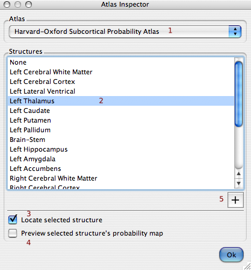

|
The atlas inspector dialog allows the user to select anatomical regions from a given atlas (1). On selecting an object from the list (2) the user can optionally have the cursor moved to the object (3) and/or the object's probability map temporarily shown (4). Click on the "Add map" button (5) to permanently add a probability map to the main layer list. |
 |